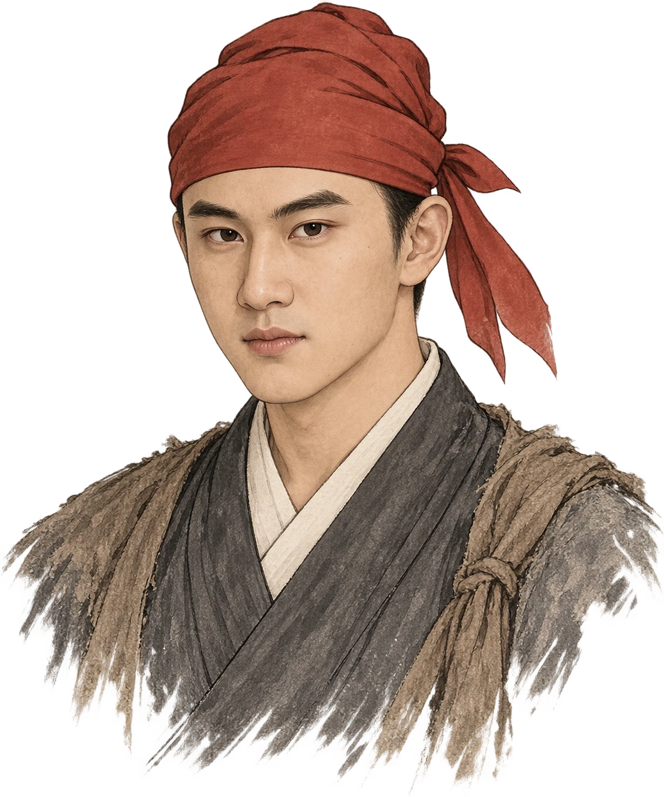
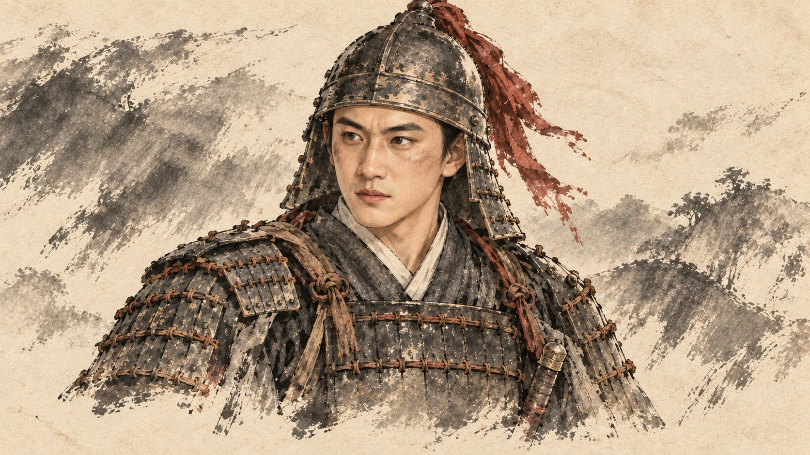
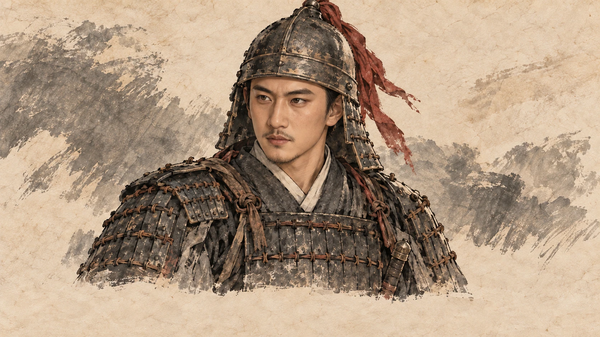
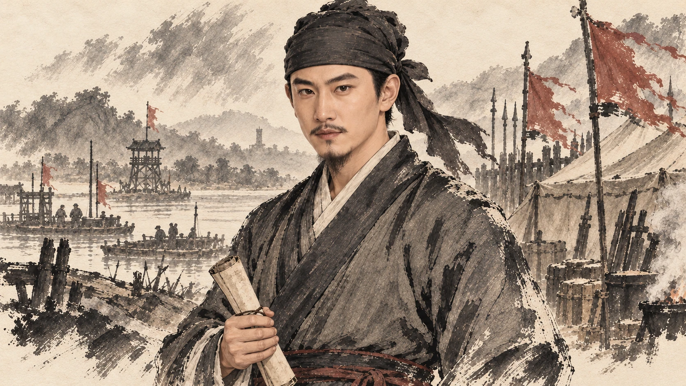
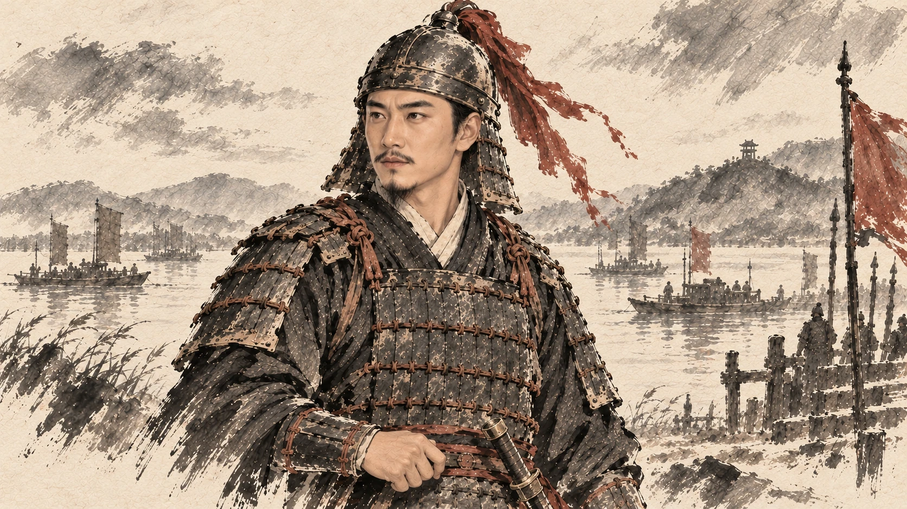
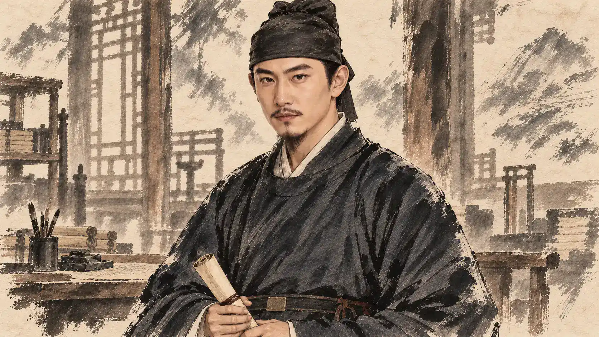

面容保持一致，年龄与身份通过克制的变化表达。本页展示已接入游戏的分期代表图。

1352—1353 · 郭部红巾青年第一章正常游玩使用投军后的红巾形象；僧衣留给投军前语境。

1353—1356 · 临阵主将青年脸型保留，临阵按场景使用甲胄。

1356—1360 · 江南经营轻微风霜与短髭须；不以削瘦脸颊制造成熟。

1361—1363 · 军府常服成熟而可辨认的同一人；姿态与目光表现主将身份。

1361—1364 · 前线甲胄盔甲用于当前临阵场景，非每一场家庭或文书谈话。

1364 · 吴王政务沿用用户选定的吴王面容。称谓由奉位事件完成后变更，尚未使用登极礼服。
同一人的成长
朱元璋、马氏保留用户指定的眉眼、鼻唇与脸型关系。成熟不等于换脸：权位主要由处境、姿态、服装、目光与他人的反应体现。沐英、李文忠等也按章节年龄更换相应人物图。
各阶段并非每年一张写实肖像。具体容貌、须髭和服饰细节属于美术复原；用户提供的AI年轻化参考是本作形象基准，不作为当年实貌确证。第三人称仍使用简化模型，并非高精度三维面模。
查看人物用图接入记录 · 查看实际剧情场景